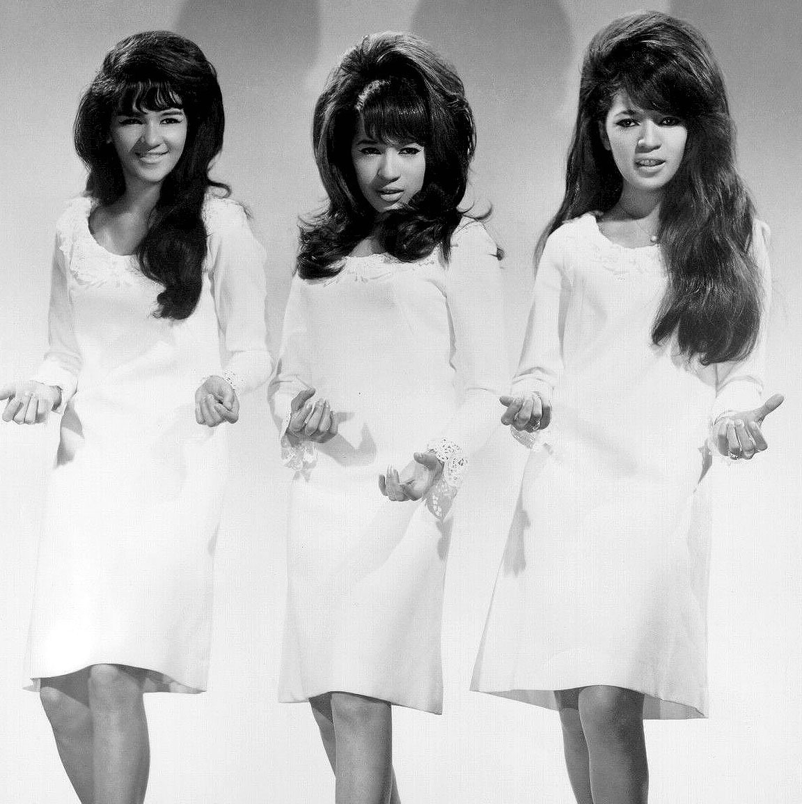
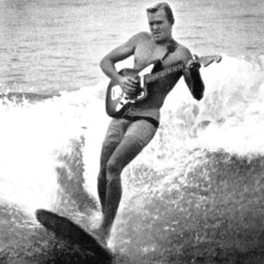
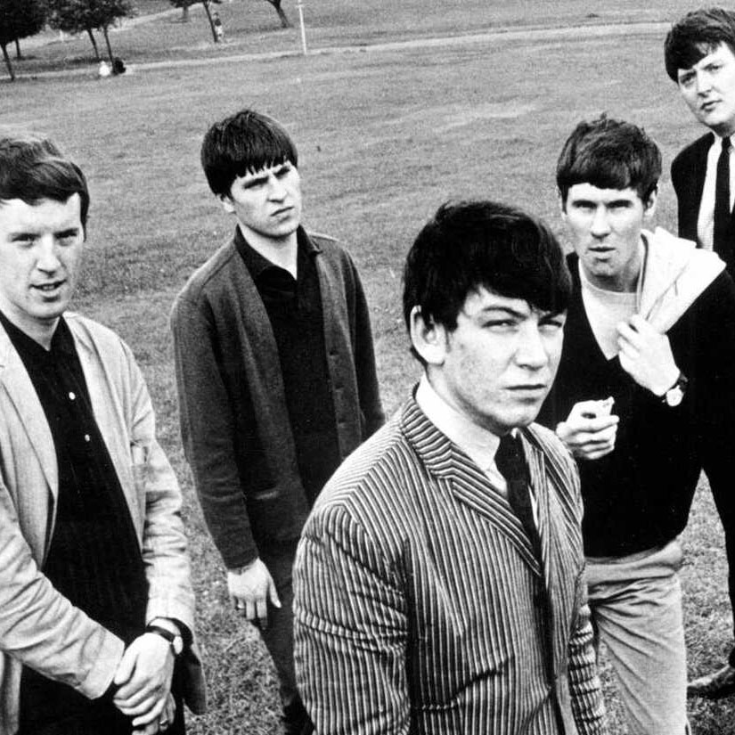
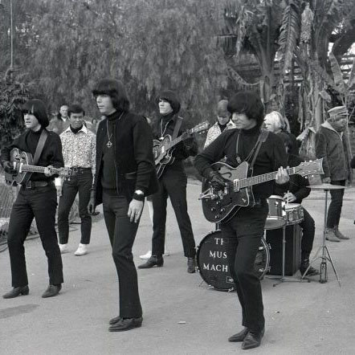
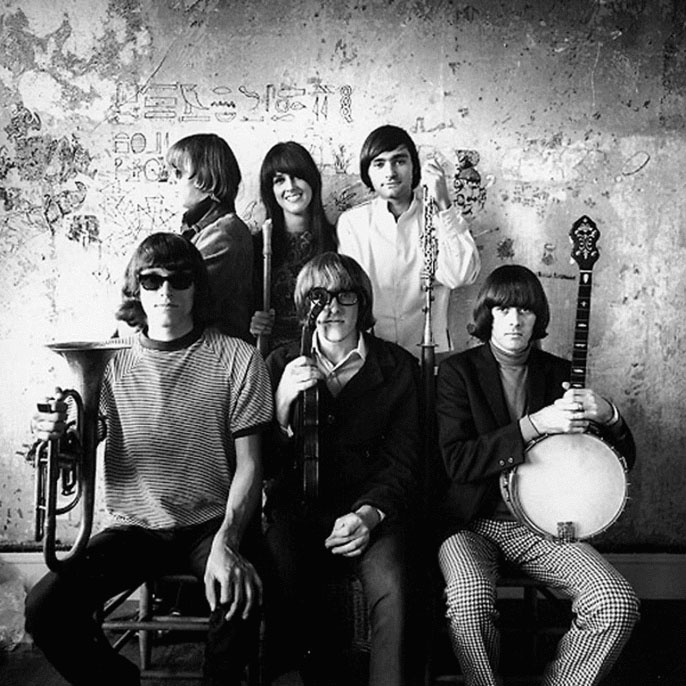
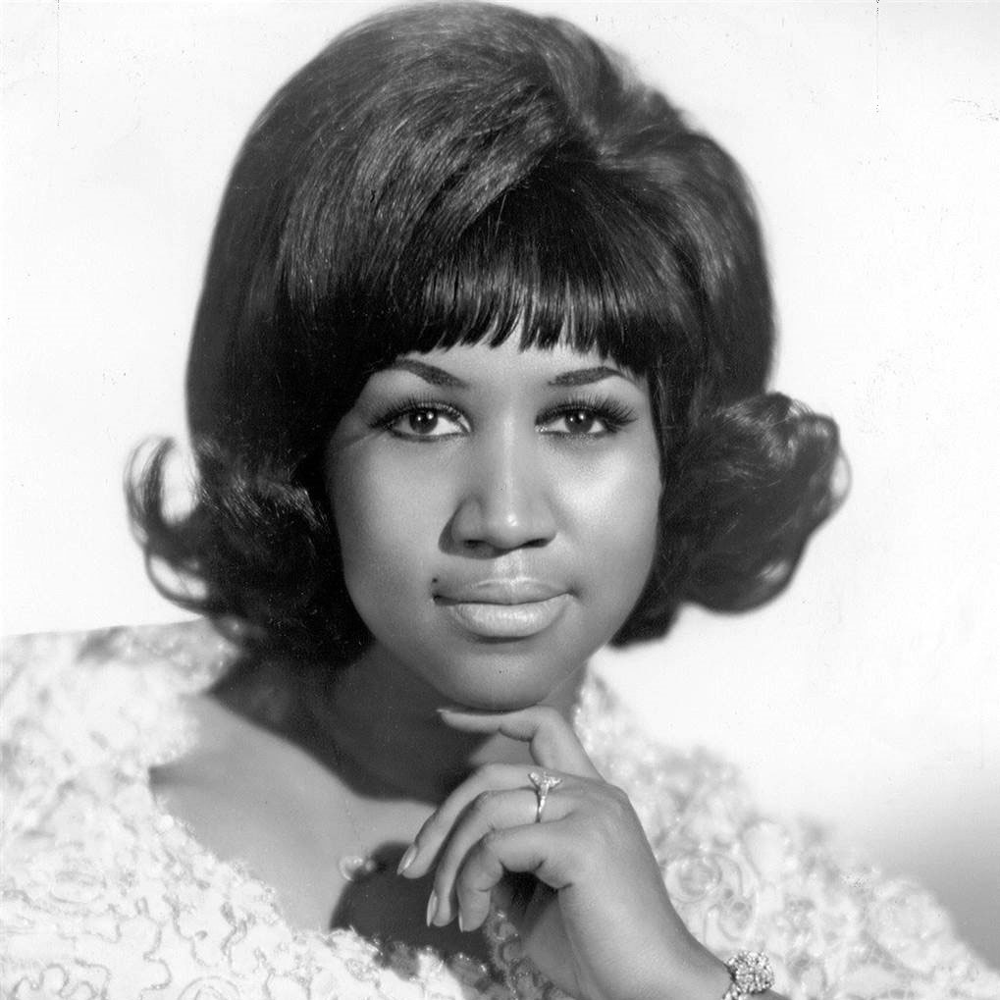

Girl Groups
Girl Groups of the 1960s were the pioneers of the new sound of pop music. This genre was most prominent from 1961 to 1964 and produced some the most catchiest songs of all time. There are over 1,500 estimated girl groups that recorded music in the 1960s.

- Martha and the Vandellas
- The Shangri-Las
- The Ronettes
- The Crystals
Surf Rock
A style that arose from Southern California within the surfing community. Surf rock was most popular from 1958 to 1964. This style was heavily instrumental with focus on the electric guitar but a second sub-genre called Vocal Surf soon emerged with the Beach Boys.

- Dick Dale and the Del-Tones
- The Beach Boys
- The Surfaris
- The Ventures
British Invasion
Heavily influenced by R&B and rock and roll, England started to make their mark in music history with the arrival of the Beatles in New York City on 1964. This genre was most popular during 1964-1967, producing some of the most notable rock groups of all time.

- The Beatles
- The Yardbirds
- The Kinks
- The Rolling Stones
Garage Rock
Often referred to Garage-Punk, garage rock introduced a raw and distorted sound to rock and roll from 1964 to 1968. It was not considered a genre of music during the 1960s, but gained notoriety in the 1972 with the release of the famous compilation, Nuggets.

- The Sonics
- The Monks
- The Seeds
- The Music Machine
Psychedelic Rock
Psychedelic rock took form with the emergence of the psychedelic drug culture. This genre had two sub-variants, Psychedelia which had a more pop sound and Acid Rock which was much heavier. Psychedelic rock as a whole was popular during 1967-1970.

- Jefferson Airplane
- Grateful Dead
- Captain Beefheart
- Ultimate Spinach
Soul/Funk
Soul music emerged from African-American communities in the early 60s. It evolved from Rock and Roll and Gospel music. Motown Records played the most important roll in producing music for African-American artists. Soul music turned into Funk later in the decade.

- Aretha Franklin
- Sly and the Family Stone
- James Brown
- Curtis Mayfield